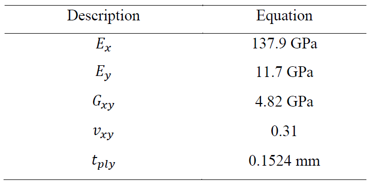
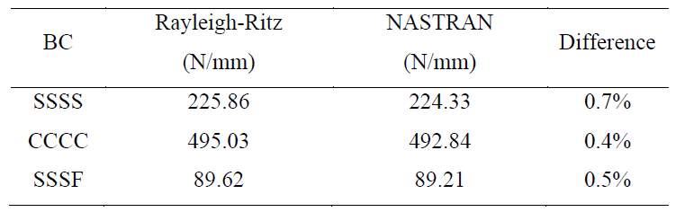
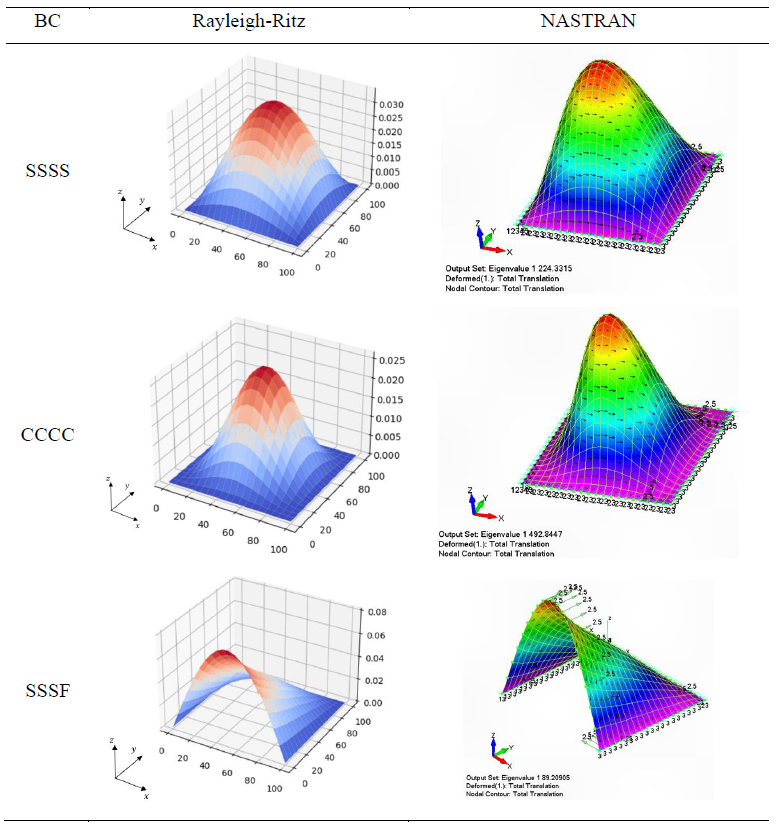

Critical Buckling Examples#
Presented within Rafael’s master dissertation “COMPOSITE PLATE OPTIMIZATION COMBINING SEMIANALYTICAL MODEL, LAMINATION PARAMETERS AND A GRADIENT-BASED OPTIMIZER”.
Access the full repository with complete study and NASTRAN FEM model at: rafaelpsilva07/rafaelmscdissertation
The following examples are part of the Ritz verification against FEM model.
Simply Supported study case (SSSS)#
This study case aims to verify the Rayleigh-Ritz implementation made with Composipy (Silva, R.P. 2023). Mathematical verification of the Rayleigh-Ritz implementation is made against analytical buckling equation and FEM model. The benchmarking example is a simply supported plate with biaxial load, which considers a quasi-isotropic layup [(45/-45)2/02/902]s and properties according Table below. This example came from Kassapoglou (2010).

Dimension of the square plate is 100 mm and the load ratio (𝑁𝑦/𝑁𝑥) is 0.5. Analytical solution for this problem using Equation below is 234.7 N/mm.
This problem using composipy results in 225.9 N/mm. See code below.
[1]:
from composipy import OrthotropicMaterial, LaminateProperty, PlateStructure
[5]:
E1 = 137.9e3
E2 = 11.7e3
v12 = 0.31
G12 = 4.82e3
t = 0.1524
a = 100
b = 100
Nxx = -1
Nyy = -0.5
m = 7
n = 7
mat = OrthotropicMaterial(E1, E2, v12, G12, t)
stack = [45, -45]*2 + [0]*2 + [90]*2
stack += stack[::-1]
lam = LaminateProperty(stack, mat)
plate = PlateStructure(lam, a, b, "PINNED", Nxx=Nxx, Nyy=Nyy, m=m, n=n)
eigenvalue, eigenvector = plate.buckling_analysis()
print(f'min eigenvalue is {eigenvalue[0]: .1f} N/mm')
plate.plot_eigenvalue()
min eigenvalue is 225.9 N/mm
Different boundary conditions#
Table below extends the study for different boundary conditions in order to verify polynomial functions presented in section 2.1.3. The results are verified against a NASTRAN FEM model and the maximum difference is 0.7%. Table 6 presents the first buckling mode deformation shape.

Clamped study case (CCCC)#
[7]:
lam = LaminateProperty(stack, mat)
plate = PlateStructure(lam, a, b, "CLAMPED", Nxx=Nxx, Nyy=Nyy, m=m, n=n)
eigenvalue, eigenvector = plate.buckling_analysis()
print(f'min eigenvalue is {eigenvalue[0]: .1f} N/mm')
plate.plot_eigenvalue()
min eigenvalue is 495.0 N/mm
Simply supported with one free edge study case (SSSC)#
[9]:
constraints = {
'x0' : ['TX', 'TY', 'TZ'],
'xa' : ['TX', 'TY', 'TZ'],
'y0' : [],
'yb' : ['TX', 'TY', 'TZ']
}
plate = PlateStructure(lam, a, b, constraints, Nxx=Nxx, Nyy=Nyy)
eigenvalue, eigenvector = plate.buckling_analysis()
print(f'min eigenvalue is {eigenvalue[0]: .1f} N/mm')
plate.plot_eigenvalue()
min eigenvalue is 89.6 N/mm
Comparison with NASTRAN deformed shape#

References#
Kassapoglou, Christos. Design and Analysis of Composite Structures: With Applications to Aerospace Structures. John Wiley & Sons, 2010.